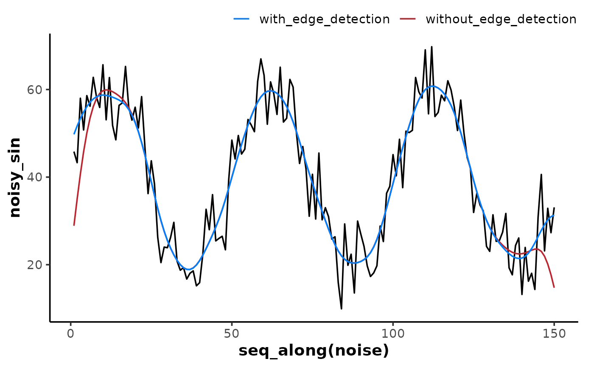

Apply a Butterworth digital filter to vector data with signal::butter()
and signal::filtfilt() which handles 'edges' better at the start and end
of the data.
Arguments
- x
A numeric vector.
- n
An integer defining the filter order for
method = "butterworth"(defaultn = 1).- W
A one- or two-element numeric vector defining the filter cutoff frequency(ies) for
method = "butterworth", as a fraction of the Nyquist frequency (see Details).- type
A character string indicating the digital filter type for
method = "butterworth"(see Details)."low"For a low-pass filter (the default).
"high"For a high-pass filter.
"stop"For a stop-band (band-reject) filter.
"pass"For a pass-band filter.
- edges
A character string indicating how to pad
xfor edge detection."rev"(the default) Will pad
xwith the preceding 5% data in reverse sequence."rep1"Will pad
xby repeating the last preceding value."none"Will return the unpadded
signal::filtfilt()output.
- na.rm
A logical indicating whether missing values should be ignored (
TRUE) before the filter is applied. OtherwiseFALSE(the default) will throw an error (see Details).
Details
Applies a centred (two-pass symmetrical) Butterworth digital filter from
signal::butter() and signal::filtfilt().
Filter type defines how the desired signal frequencies are either
passed or rejected from the output signal. Low-pass and high-pass
filters allow only frequencies lower or higher than the cutoff
frequency W to be passed through as the output signal, respectively.
Stop-band defines a critical range of frequencies which are rejected
from the output signal. Pass-band defines a critical range of
frequencies which are passed through as the output signal.
The filter order (number of passes) is defined by n, typically in
the range n = [1, 10]. Higher filter order tends to capture more
rapid changes in amplitude, but also causes more distortion around
those change points in the signal. General advice is to use the
lowest filter order which sufficiently captures the desired rapid
responses in the data.
The critical (cutoff) frequency is defined by W, a numeric value for
low-pass and high-pass filters, or a two-element vector
c(low, high) defining the lower and upper bands for stop-band and
pass-band filters. W represents the desired fractional cutoff
frequency in the range W = [0, 1], where 1 is the Nyquist
frequency, i.e., half the sample rate of the data in Hz.
Missing values (NA) in x will cause an error unless na.rm = TRUE.
Then NAs will be preserved and passed through in the returned vector.
Examples
library(ggplot2)
set.seed(13)
sin <- sin(2 * pi * 1:150 / 50) * 20 + 40
noise <- rnorm(150, mean = 0, sd = 6)
noisy_sin <- sin + noise
filt_without_edge <- filter_butter(x = noisy_sin, n = 2, W = 0.1, edges = "none")
filt_with_edge <- filter_butter(x = noisy_sin, n = 2, W = 0.1, edges = "rep1")
ggplot(data.frame(), aes(x = seq_along(noise))) +
theme_mnirs() +
scale_colour_mnirs(name = NULL) +
geom_line(aes(y = noisy_sin)) +
geom_line(aes(y = filt_without_edge, colour = "filt_without_edge")) +
geom_line(aes(y = filt_with_edge, colour = "filt_with_edge"))
